Озера Кривое и Круглое расположены в Северной Карелии вблизи Беломорской биологической станции (ББС) ЗИН РАН. Значительная удаленность от крупных населенных пунктов делает их удобным объектом для изучения естественной динамики водных экосистем, практически не затронутых антропогенным воздействием. Первые комплексные исследования на этих озерах были проведены в 1969 и 1970 годах в ходе выполнения Международной биологической программы. Они были возобновлены на регулярной всесезонной основе в 2002 г.
На озерах Кривое и Круглое проводится изучению динамики пищевых цепей, потоков энергии, круговорота биогенных элементов, динамики популяций и биотических связей гидробионтов под воздействием естественных факторов, в первую очередь изменений климата. Такие исследования позволяют определить референтное (исходное) состояние водных экосистем, важное для оценки интенсивности антропогенных изменений в их структуре и функционировании. Хорошие условия для проведения экспериментов, созданные на ББС ЗИН РАН, дают возможность в полевых условиях успешно проводить эколого-физиологические исследования скоростей роста, метаболизма, питания, экскреции биогенных элементов и жизненных циклов гидробионтов.
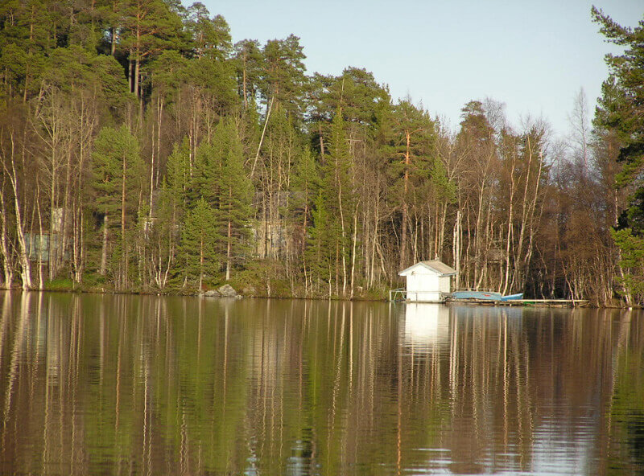
 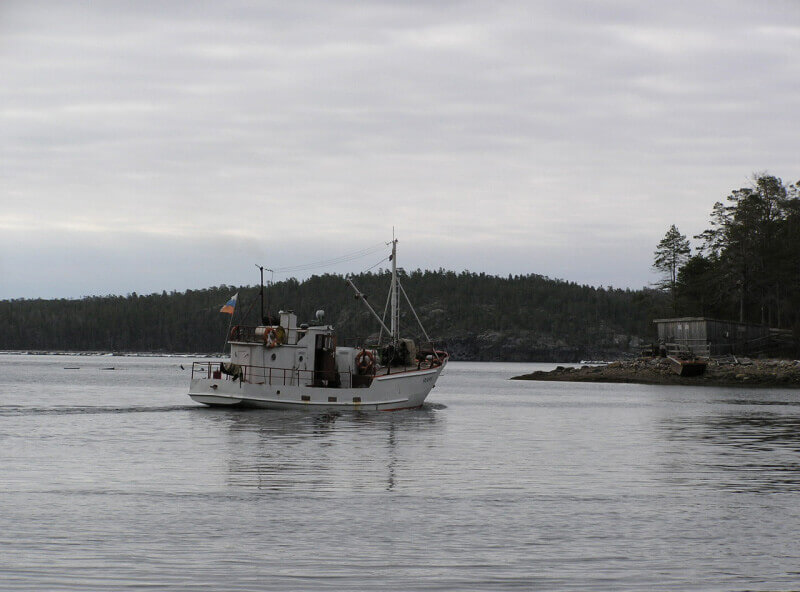
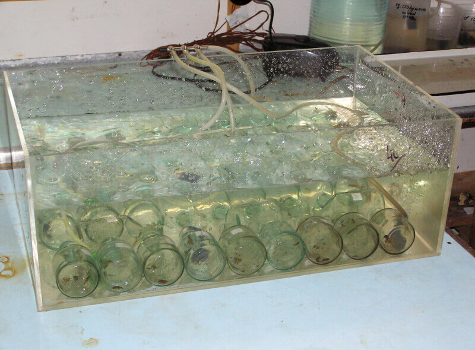
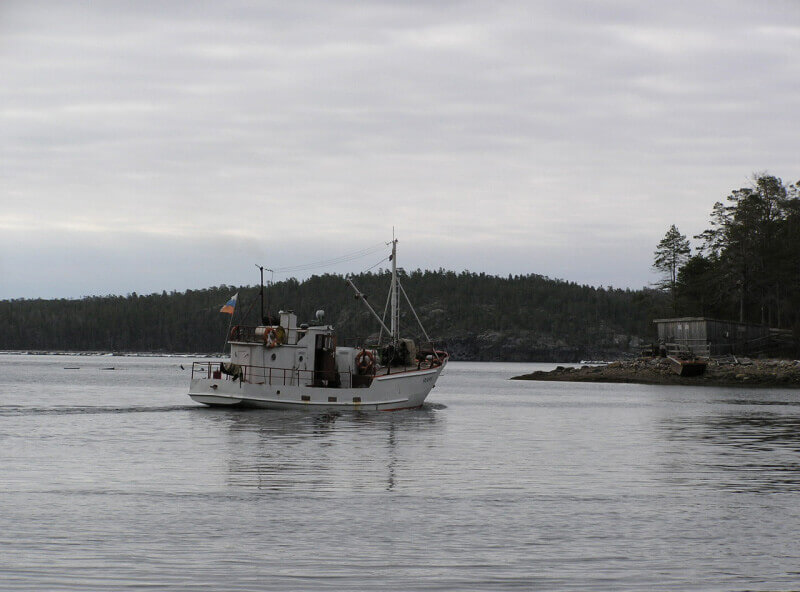
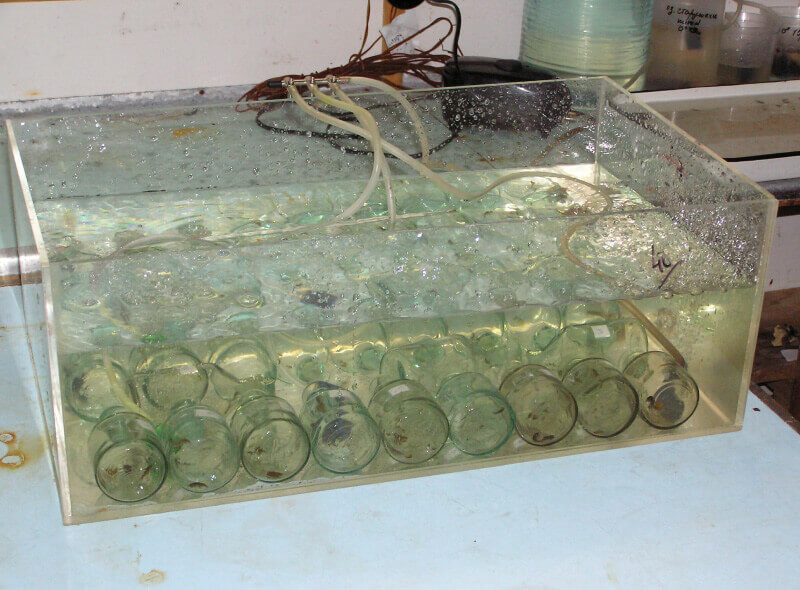
 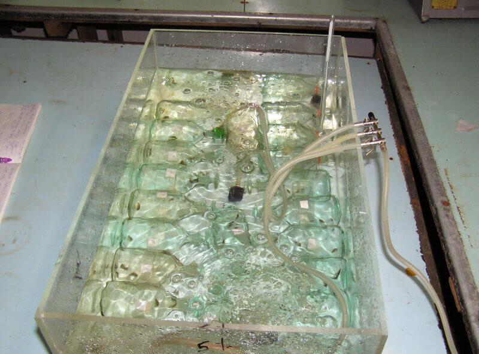
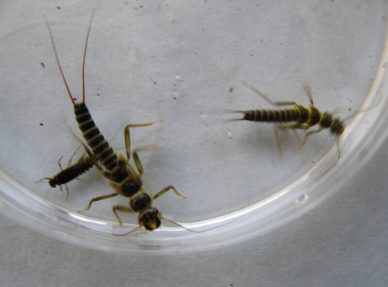
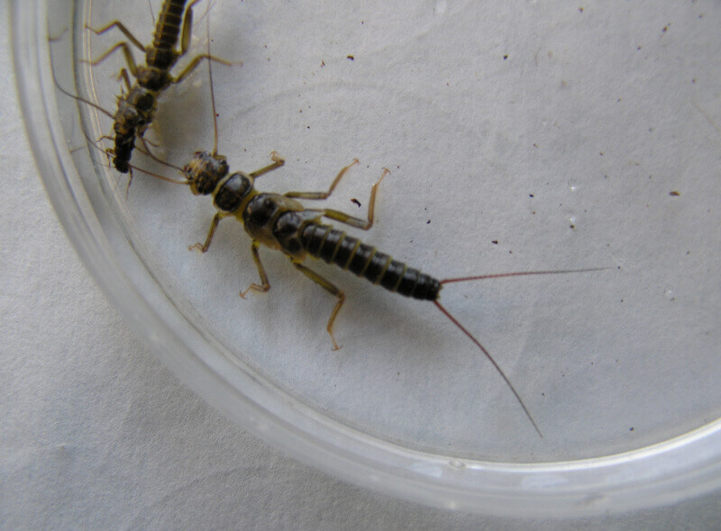
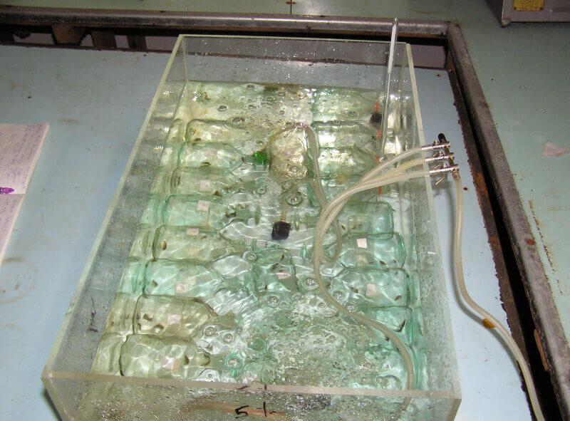
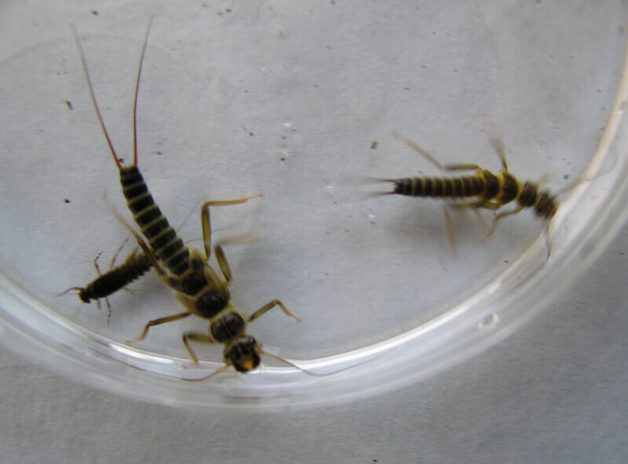
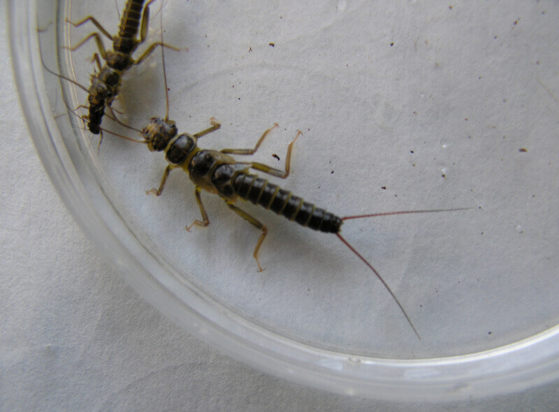
 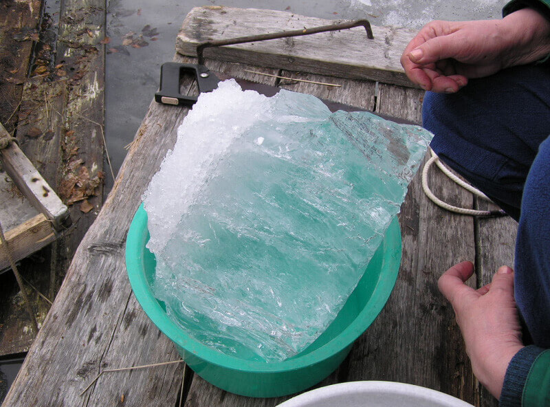
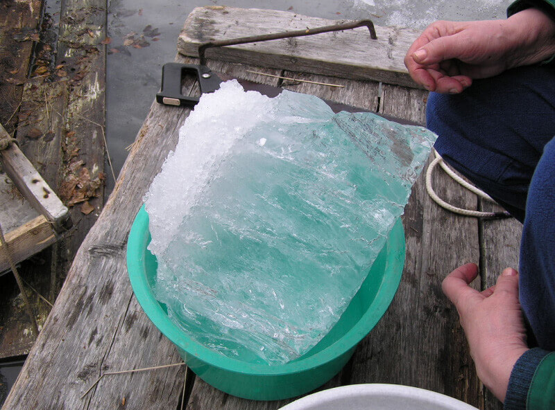


 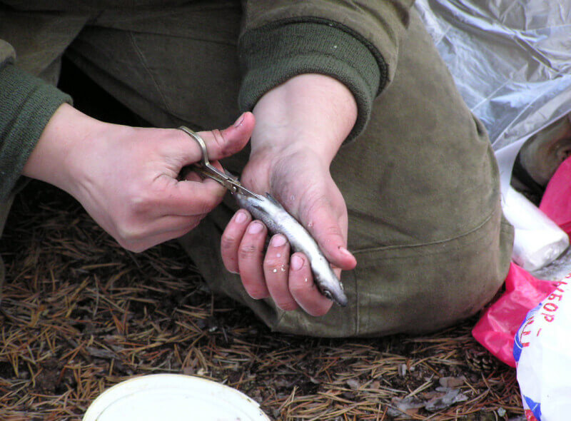
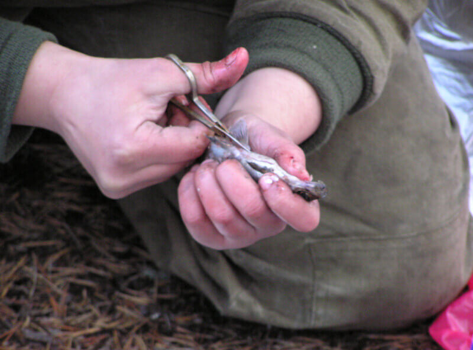
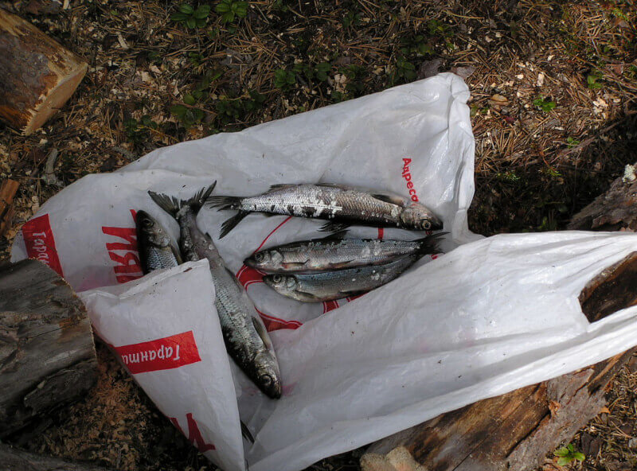
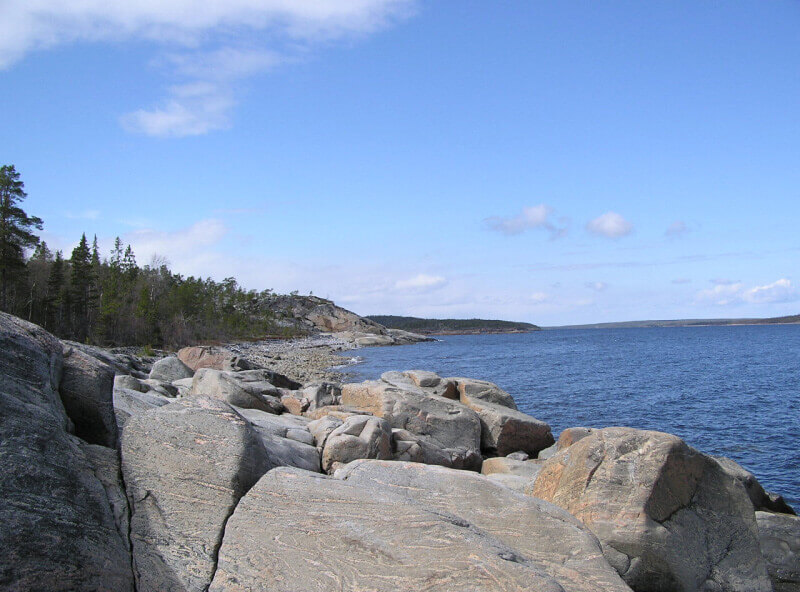
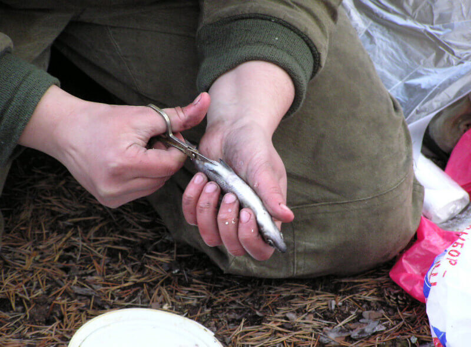
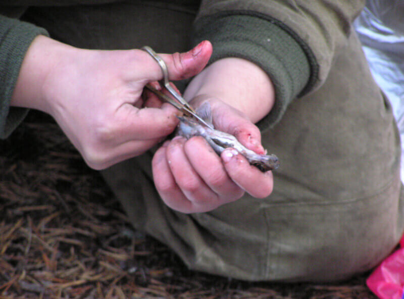
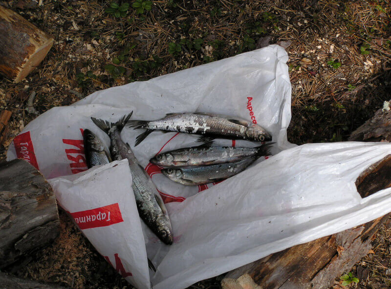
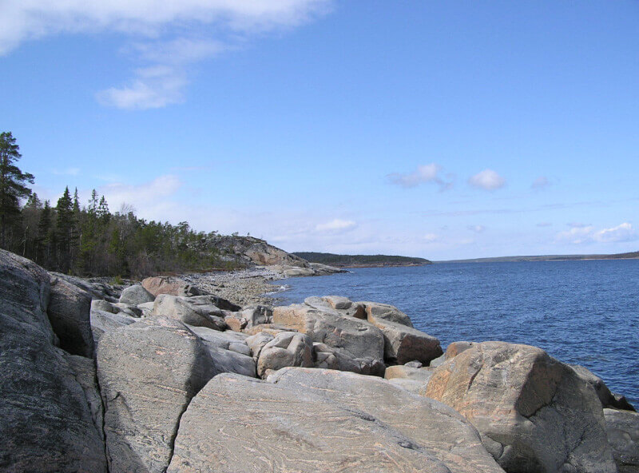